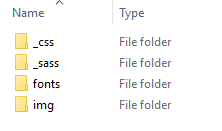
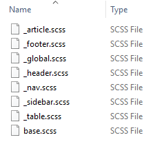

Sass
Sass står for "Syntactically Awesome Stylesheets" som er nesten det samme som CSS men ekstra funksjoner. Det er veldig vanskelig å holde styr på alle CSS-stiler når filen blir 3000 + linjer. Det er der sass kommer inn, det gir deg noen smarte funksjoner som nesting av elementer, lar oss lage variabler og til og med dele css-filer for å gjøre det mer modulært. Full liste over funksjoner og grunnleggende forklaring finner du på sass-lang.com.
Måten sass fungerer på er akkurat det samme som vanlig CSS, det legger bare til ekstra funksjoner som ikke støttes av CSS. Det er der kompilering kommer inn, du kan bruke scout-app, kommandolinje eller hva som helts du finner på google for å kompilere sass inn i CSS. Kompileringsprosessen er ganske grunnleggende, den konverterer alle sass-funksjonene til vanlig CSS. Alle splittede sassfiler samles i en stor CSS-fil. Det er ikke lesbart for mennesker, men det trenger ikke å være siden hvis du bruker sass, vil du ikke jobbe med standard CSS uansett. Samlet CSS vil se veldig rotete ut, men det har faktisk høyere lesetider for datamaskiner som resulterer i raskere lasting av nettstedet ditt.
Sass gir deg bedre oversikt over CSS og legger til noen virkelig nyttige funksjoner for å gjøre livet enklere når du skriver CSS. Sass er ikke veldig effektiv for veldig små prosjekter, men du bør bruke sass for store prosjekter. Her er min struktur på sass filer:
 